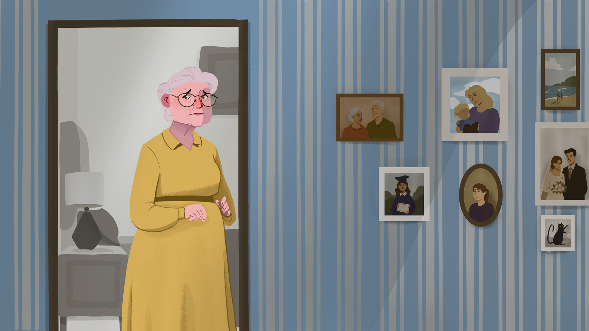

Tayeb
Tayeb is a two-part project exploring memory, loss, and empathy through Alzheimer's. The two outcomes include a hand-drawn animation and an illustrated booklet, both of which carry the same idea: the person is still there, only harder to find.

A two-color palette where cool blue represents loss and forgetfulness, and warm yellow is presence and memory, tell a dialogue-less story as the world grows more fragmented and abstract, a puzzle breaking apart.
Visually the project draws on Suprematism's use of pure color and geometric form to communicate without words as a way to represent the loss of memory, presence, and identity. Thematically the project draws on inspirations like Nomada Studios' debut game 'Gris' in it's nonverbal, color-based storytelling; and Coal Supper's 'When You Were Here' for its faithful first-person representation of experiencing dementia.
The challenge in this project was scope: trying to tell the patient's experience, the caregiver's experience, and create public awareness all at once. Committing to a single thematic line made it stronger.
Named for my grandfather, Tayeb - meaning kind and good - the project is dedicated to his memory, though it isn't his story.